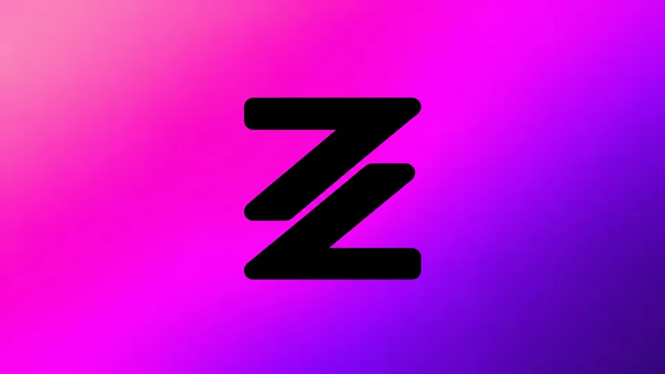

Live TV
Browse channels from your own playlist.
INDEPENDENT IPTV PLAYER
An elegant media player for your own playlists, on phones, tablets and Android televisions.
ZAPIKI organizes and plays your personal playlists on Android phones, tablets and TVs. Keep favorites and resume watching across signed-in devices.
Currently in closed testing

Official app artwork
FEATURES
Keep your own sources in a clear interface designed for every screen.
Browse channels from your own playlist.
Explore your catalogs and resume playback.
Save channels, movies and series.
Sync compatible preferences and history.
Choose ExoPlayer or VLC and available audio and subtitles.
Organize categories and playback preferences.
M3U · XTREAM · EPG
Add your M3U playlists, compatible Xtream credentials or personal streams. Content always comes from the sources you select.
ZAPIKI IN PICTURES
Authentic screenshots will be added once selected. No fictional UI is presented as an app screenshot.
SIMPLE AND CLEAR
Premium purchases and daily limits are not enabled during testing; the applicable price will be shown in Google Play.
Free access. A 15-minute daily limit is planned after testing.
0 €Planned €9.99 annual subscription in Europe, with no daily viewing cap. No IPTV content included.
9,99 € / year** Up to three simultaneous screens per account, subject to your provider’s limits. Independent player: no IPTV content or subscriptions are included.
FAQ
No. ZAPIKI supplies no channels, movies, series, playlists, content subscriptions or viewing rights. Use only authorized sources.
Add your own M3U playlists, local M3U files, compatible Xtream accounts or personal streams. Availability depends on your sources and device.
Yes, on compatible Android TV and Fire TV devices, Android phones and tablets.
Free is planned to allow 15 minutes a day; Premium would remove the daily cap. Both purchases and limits remain inactive during closed testing.
ZAPIKI · GOOGLE PLAY
Find ZAPIKI on Google Play. Access may be limited to testers before public release.